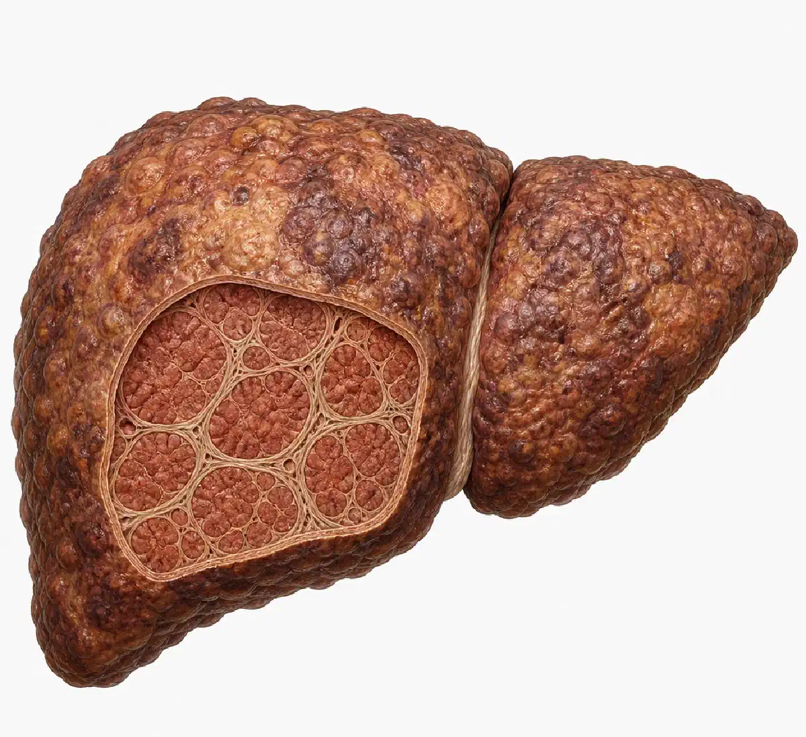

+38(068) 79 72 782
+38(068) 79 72 782Цироз печінки: причини, симптоми, стадії та лікування
Пояснює лікар нарколог


Безкоштовна консультація, працюємо цілодобово 24/7
Пояснює лікар нарколог

Дата написання: 3 трав. 2026 р.
Останнє оновлення: 3 трав. 2026 р.
Цироз печінки — це тяжке хронічне захворювання, при якому здорові клітини печінки поступово заміщуються рубцевою сполучною тканиною. Через це порушується структура органа, погіршується кровообіг усередині печінки і знижується її здатність виконувати життєво важливі функції. Печінка бере участь у знешкодженні токсинів, переробці жирів, білків і вуглеводів, синтезі білків крові, утворенні жовчі та підтриманні обміну речовин. Коли розвивається цироз, ці процеси поступово порушуються.
Небезпека захворювання полягає в тому, що на ранніх стадіях цироз печінки може довго перебігати майже непомітно. Людина може відчувати тільки слабкість, втомлюваність, тяжкість у правому підребер’ї або зниження апетиту, не пов’язуючи ці симптоми із серйозною патологією. Нерідко цироз виявляють уже тоді, коли з’являються ускладнення: асцит, жовтяниця, кровотечі, виражена слабкість або ознаки печінкової недостатності. Цироз печінки потребує обов’язкового спостереження у лікаря. Чим раніше виявлена причина пошкодження печінки і розпочато лікування, тим вищий шанс уповільнити прогресування хвороби, знизити ризик ускладнень і зберегти якість життя пацієнта.
Цироз печінки — це стан, при якому нормальна тканина печінки поступово замінюється фіброзною, тобто рубцевою тканиною. Такий процес розвивається не одразу, а зазвичай формується роками на тлі хронічного запалення, токсичного впливу, вірусних інфекцій, жирової хвороби печінки або тривалого вживання алкоголю. У нормі печінка має високу здатність до відновлення. Однак якщо пошкоджувальний фактор діє постійно, клітини печінки не встигають повноцінно відновлюватися. На місці пошкоджених ділянок утворюється сполучна тканина. З часом вона порушує нормальну будову печінки, стискає судини і заважає органу виконувати свої функції. При цирозі страждає не тільки сама печінка, а й увесь організм. Порушується обмін речовин, погіршується очищення крові від токсинів, знижується синтез важливих білків, може порушуватися згортання крові, підвищується тиск у системі ворітної вени. Саме тому цироз вважається не просто захворюванням печінки, а системною проблемою, яка потребує комплексного медичного контролю.
Причини цирозу печінки можуть бути різними, але найчастіше захворювання розвивається на тлі тривалого хронічного пошкодження органа. Однією з найпоширеніших причин є зловживання алкоголем. Етанол і продукти його розпаду чинять токсичний вплив на клітини печінки, викликають запалення, жирове переродження і поступове формування рубцевої тканини. Ще одна часта причина — вірусні гепатити, особливо хронічні гепатити B і C. Ці інфекції можуть роками пошкоджувати печінку, поступово призводячи до фіброзу, а потім і до цирозу. Небезпека вірусних гепатитів у тому, що вони можуть довго перебігати без виражених симптомів.
Також цироз може розвиватися при неалкогольній жировій хворобі печінки. Цей стан часто пов’язаний із зайвою вагою, інсулінорезистентністю, цукровим діабетом 2 типу, порушенням обміну жирів і малорухливим способом життя. Спочатку в печінці накопичується жир, потім може розвинутися запалення, фіброз і цироз. До інших причин належать аутоімунні захворювання печінки, хвороби жовчних проток, спадкові порушення обміну речовин, тривалий прийом деяких токсичних для печінки препаратів, вплив отруйних речовин і хронічні застійні процеси при серцево-судинних захворюваннях.
Перші симптоми цирозу печінки часто бувають неспецифічними. Це означає, що вони можуть нагадувати звичайну втому, наслідки стресу, неправильного харчування, перевтоми або інших захворювань. На ранньому етапі людина може не відчувати вираженого болю і довго не підозрювати, що в печінці вже відбуваються серйозні зміни. Найчастіше пацієнт скаржиться на слабкість, швидку втомлюваність, зниження працездатності, сонливість, погіршення апетиту і дискомфорт у правому підребер’ї. Може з’являтися відчуття тяжкості після їжі, особливо після жирної, смаженої або важкої їжі. Іноді людина помічає, що звичні навантаження стали переноситися гірше, а відновлення після звичайного робочого дня займає більше часу.
З боку травлення можуть виникати нудота, гіркота в роті, здуття живота, нестабільний стул, зниження апетиту і неприємні відчуття в животі. У деяких пацієнтів поступово знижується маса тіла, з’являється дратівливість, погіршується сон, знижується концентрація уваги. Такі ознаки часто не сприймаються як серйозний привід для обстеження, тому захворювання може прогресувати приховано. На ранніх стадіях цирозу також можуть з’являтися зміни в аналізах крові. Лікар може виявити підвищення печінкових ферментів, білірубіну, зниження тромбоцитів, зміну рівня альбуміну або показників згортання крові. Іноді саме лабораторні відхилення стають першим сигналом, що печінка працює з порушеннями.
Особливо важливо не ігнорувати такі симптоми людям із групи ризику: при регулярному вживанні алкоголю, хронічних вірусних гепатитах, жировій хворобі печінки, ожирінні, цукровому діабеті, тривалому прийомі ліків або наявності захворювань печінки в минулому. Якщо слабкість, дискомфорт у животі, проблеми з травленням або погіршення самопочуття зберігаються тривалий час, краще звернутися до лікаря і перевірити стан печінки.
На пізніх стадіях цирозу симптоми стають більш вираженими. У пацієнта може з’являтися жовтушність шкіри і склер, шкірний свербіж, потемніння сечі, освітлення калу, виражена слабкість, зниження ваги і втрата м’язової маси. Живіт може збільшуватися через накопичення рідини — асцит. Також можливі набряки ніг, підвищена кровоточивість ясен, поява синців без явної причини, судинні «зірочки» на шкірі, почервоніння долонь, порушення сну і виражена втомлюваність. У деяких пацієнтів з’являються зміни поведінки, загальмованість, погіршення пам’яті і концентрації, що може бути пов’язано з накопиченням токсинів в організмі. Пізні стадії цирозу часто супроводжуються ускладненнями. Може розвиватися портальна гіпертензія, варикозне розширення вен стравоходу і шлунка, асцит, печінкова енцефалопатія, бактеріальні інфекції і печінкова недостатність. Такі стани потребують термінової медичної допомоги і постійного спостереження спеціаліста.
Цироз печінки небезпечний тим, що поступово порушує життєво важливі функції організму. Печінка перестає повноцінно знешкоджувати токсичні речовини, синтезувати білки, брати участь в обміні речовин і підтримувати нормальне згортання крові. У результаті страждають травна, нервова, серцево-судинна та імунна системи. Одним із серйозних ризиків є розвиток портальної гіпертензії — підвищення тиску в системі ворітної вени. Це може призводити до збільшення селезінки, зниження кількості тромбоцитів, асциту і варикозного розширення вен стравоходу. Варикозні вени можуть кровоточити, а така кровотеча є небезпечним станом.
Цироз також підвищує ризик печінкової недостатності і раку печінки. Чим сильніше пошкоджений орган, тим вища ймовірність ускладнень. Тому пацієнтам із цирозом важливо регулярно проходити обстеження, контролювати аналізи, виконувати рекомендації лікаря і не ігнорувати погіршення самопочуття.
Цироз печінки розвивається поступово і зазвичай проходить кілька стадій. На ранніх етапах печінка ще може частково компенсувати пошкодження, тому симптоми бувають мінімальними або повністю відсутніми. Такий період називають компенсованим цирозом. Людина може жити звичним життям, працювати, не відчувати вираженого болю і не підозрювати, що структура печінки вже змінюється.
Стадія цирозу визначається не тільки за самопочуттям. Навіть якщо людина почувається відносно нормально, хвороба може прогресувати. Для точної оцінки стану потрібні аналізи крові, УЗД печінки, еластографія, ендоскопія для перевірки вен стравоходу та інші обстеження за призначенням лікаря.
Алкогольний цироз печінки розвивається на тлі тривалого токсичного впливу алкоголю. Регулярне вживання спиртного пошкоджує клітини печінки, порушує обмін жирів, викликає запалення і сприяє формуванню фіброзу. З часом рубцева тканина заміщує нормальну тканину печінки, структура органа порушується, і розвивається цироз. Особливість алкогольного цирозу полягає в тому, що на ранніх стадіях пошкодження може частково стабілізуватися при повній відмові від алкоголю і своєчасному лікуванні. Але якщо людина продовжує пити, хвороба прогресує швидше, а ризик ускладнень значно підвищується. Алкоголь посилює навантаження на печінку, погіршує її здатність до відновлення і може прискорювати перехід захворювання в декомпенсовану стадію. При алкогольному цирозі особливо важливо повністю виключити спиртне. Навіть невеликі дози алкоголю можуть погіршувати стан печінки, підвищувати ризик асциту, жовтяниці, кровотеч, печінкової недостатності і знижувати ефективність лікування. Тому пацієнту часто потрібне не тільки спостереження гастроентеролога або гепатолога, але й допомога нарколога. При алкогольному цирозі можна отримати консультацію нарколога в наших містах:
Така консультація допомагає пацієнту безпечно відмовитися від спиртного і підібрати подальшу тактику лікування алкогольної залежності. Лікар оцінює стан людини, тривалість вживання, наявність запоїв, вираженість тяги, ризик зриву, супутні захворювання і загальне самопочуття. За необхідності може бути рекомендована детоксикація, медикаментозна підтримка, психотерапія або програма відновлення.
Хронічні вірусні гепатити B і C є одними з важливих причин розвитку цирозу печінки. Віруси можуть роками підтримувати запалення в печінці, пошкоджуючи клітини і стимулюючи утворення фіброзної тканини. За відсутності лікування хронічний гепатит може поступово перейти в цироз.
Небезпека вірусних гепатитів полягає в тому, що вони часто перебігають приховано. Людина може не знати про захворювання, поки не з’являться зміни в аналізах або ознаки ураження печінки. Тому людям із групи ризику важливо проходити обстеження на вірусні гепатити. Сучасне лікування вірусних гепатитів дозволяє значно знизити активність запалення, а при гепатиті C у багатьох випадках досягти повного видалення вірусу з організму. Це допомагає уповільнити пошкодження печінки і знизити ризик прогресування цирозу. Пацієнтам із цирозом на тлі вірусних гепатитів необхідне регулярне спостереження у лікаря, контроль вірусного навантаження, показників печінки і обстеження для раннього виявлення ускладнень.
Неалкогольний цироз печінки може розвиватися на тлі жирової хвороби печінки, не пов’язаної з уживанням алкоголю. Такий стан часто зустрічається у людей із зайвою вагою, ожирінням, цукровим діабетом 2 типу, порушенням обміну холестерину, інсулінорезистентністю і малорухливим способом життя. Спочатку в клітинах печінки накопичується жир. Потім у частини пацієнтів розвивається запалення — неалкогольний стеатогепатит. Якщо процес триває довго, може формуватися фіброз, а потім цироз. При цьому людина може не вживати алкоголь взагалі або вживати його рідко, але печінка все одно страждає через обмінні порушення. Лікування неалкогольного цирозу потребує комплексного підходу. Важливо контролювати масу тіла, рівень цукру в крові, холестерин, артеріальний тиск і харчування. Також необхідне спостереження у лікаря, регулярні аналізи і оцінка стану печінки. Самостійно сідати на жорсткі дієти при захворюваннях печінки не можна. Різке схуднення і дефіцит поживних речовин можуть погіршити стан. План харчування і лікування повинен підбирати спеціаліст.
Діагностика цирозу печінки починається з консультації лікаря. Спеціаліст уточнює скарги, спосіб життя, вживання алкоголю, перенесені вірусні гепатити, прийняті ліки, хронічні захворювання і спадкові фактори. Також проводиться огляд: лікар звертає увагу на колір шкіри, наявність набряків, збільшення живота, судинні зміни і болючість у ділянці печінки. Для підтвердження діагнозу призначаються лабораторні та інструментальні дослідження. Важливу роль відіграють аналізи крові, УЗД органів черевної порожнини, еластографія печінки, аналізи на вірусні гепатити і оцінка згортання крові. У деяких випадках можуть знадобитися КТ, МРТ, ендоскопія або біопсія печінки.
Діагностика допомагає не тільки підтвердити цироз, але й визначити його причину, стадію, ступінь порушення функції печінки і наявність ускладнень. Це важливо для вибору правильної тактики лікування. Регулярне обстеження особливо важливе для людей із хронічними гепатитами, алкогольною залежністю, жировою хворобою печінки, цукровим діабетом та іншими факторами ризику.
При підозрі на цироз печінки лікар може призначити біохімічний аналіз крові. У ньому оцінюють показники АЛТ, АСТ, білірубіну, лужної фосфатази, ГГТ, альбуміну та інших параметрів. Ці дані допомагають зрозуміти, чи є пошкодження печінки і наскільки порушені її функції. Також важливий загальний аналіз крові. При цирозі може знижуватися рівень тромбоцитів, гемоглобіну і лейкоцитів. Це може бути пов’язано зі збільшенням селезінки, порушенням кровотворення або ускладненнями захворювання.
Обов’язково оцінюються показники згортання крові, включаючи протромбіновий час або МНВ. Печінка бере участь у синтезі факторів згортання, тому при цирозі ці показники можуть змінюватися. Додатково лікар може призначити аналізи на вірусні гепатити B і C, аутоімунні маркери, показники обміну заліза, міді та інші дослідження. Набір аналізів залежить від передбачуваної причини захворювання і стану пацієнта.
УЗД печінки при цирозі — це доступний і важливий метод обстеження, який допомагає оцінити розміри, структуру і контури печінки. При цирозі лікар може побачити неоднорідність тканини, зміну форми органа, ознаки фіброзу, збільшення селезінки, розширення судин або наявність рідини в черевній порожнині. УЗД також допомагає виявити асцит, зміни жовчного міхура, ознаки портальної гіпертензії і вогнищеві утворення в печінці. Це особливо важливо, тому що пацієнти з цирозом мають підвищений ризик розвитку пухлинних процесів. Однак одного УЗД не завжди достатньо для точної оцінки ступеня фіброзу і функції печінки. Тому його зазвичай доповнюють аналізами крові, еластографією та іншими методами обстеження. УЗД рекомендується проходити регулярно, якщо у пацієнта вже встановлений діагноз цирозу або є високий ризик його розвитку. Частоту обстежень визначає лікар.
Еластографія печінки — це сучасний неінвазивний метод, який допомагає оцінити щільність печінкової тканини. Чим більше фіброзу і рубцевих змін, тим щільнішою стає печінка. Метод дозволяє визначити ступінь фіброзу і оцінити ризик цирозу без хірургічного втручання. Еластографія особливо корисна при хронічних вірусних гепатитах, жировій хворобі печінки, алкогольному ураженні печінки та інших хронічних захворюваннях. Вона допомагає лікарю зрозуміти, наскільки далеко зайшов процес і як змінюється стан печінки на тлі лікування.
Процедура зазвичай проходить швидко і безболісно. Пацієнту не потрібне тривале відновлення, як після інвазивних методів. При цьому результати еластографії важливо оцінювати разом з аналізами і клінічною картиною, тому що на щільність печінки можуть впливати запалення, застій жовчі та інші фактори. Еластографія не замінює повністю консультацію лікаря, але є важливою частиною діагностики і спостереження при захворюваннях печінки.
Повністю відновити печінку при сформованому цирозі зазвичай неможливо, тому що рубцеві зміни вже порушують структуру органа. Однак це не означає, що лікування марне. У багатьох випадках можна уповільнити прогресування хвороби, стабілізувати стан, зменшити ризик ускладнень і покращити якість життя пацієнта. Результат залежить від причини цирозу, стадії захворювання, ступеня пошкодження печінки і готовності пацієнта дотримуватися рекомендацій лікаря. Наприклад, при алкогольному цирозі повна відмова від алкоголю може значно уповільнити погіршення стану. При вірусних гепатитах противірусне лікування може знизити активність запалення і зменшити подальше пошкодження печінки.
На ранніх стадіях при усуненні причини пошкодження можливе часткове покращення стану печінки і стабілізація фіброзу. На пізніх стадіях основна мета лікування — контроль ускладнень, підтримка функцій організму і запобігання подальшому погіршенню. Самолікування при цирозі небезпечне. Будь-які препарати, добавки і народні засоби потрібно узгоджувати з лікарем, тому що пошкоджена печінка може погано переносити багато речовин.
Лікування цирозу печінки залежить від причини захворювання і стадії процесу. Головне завдання — усунути або максимально знизити дію фактора, який пошкоджує печінку. При алкогольному цирозі необхідно повністю відмовитися від спиртного. При вірусних гепатитах призначається противірусна терапія. При неалкогольній жировій хворобі печінки важливо контролювати вагу, цукор крові і обмін речовин. Також лікування спрямоване на підтримку функцій печінки і профілактику ускладнень. Лікар може призначати препарати для контролю асциту, зниження ризику кровотеч, корекції дефіцитів, покращення харчування і лікування супутніх станів. Підбір терапії завжди індивідуальний.
Пацієнтам із цирозом важливо регулярно спостерігатися у гастроентеролога або гепатолога, здавати аналізи, проходити УЗД, контролювати стан вен стравоходу і стежити за появою ускладнень. На тяжких стадіях, коли печінка перестає справлятися зі своїми функціями, може розглядатися питання про трансплантацію печінки. Таке рішення приймається тільки спеціалізованими лікарями після комплексного обстеження.
Дієта при цирозі печінки відіграє важливу роль у підтримці організму. Харчування має бути щадним, повноцінним і збалансованим. Важливо забезпечити достатню кількість білка, вітамінів, мінералів та енергії, але при цьому не перевантажувати печінку. Зазвичай рекомендується повністю відмовитися від алкоголю, обмежити жирну, смажену, гостру їжу, копченості, надлишок солі, напівфабрикати і продукти з великою кількістю добавок. При асциті і набряках лікар може рекомендувати обмеження солі, щоб зменшити затримку рідини.
Харчування має бути регулярним. Тривалі голодування, жорсткі дієти і різке зниження ваги можуть бути небезпечні. Особливо важливо не допускати виснаження, тому що при цирозі часто страждає м’язова маса і загальне харчування організму. Раціон краще підбирати разом із лікарем або дієтологом, особливо якщо у пацієнта є асцит, цукровий діабет, ожиріння, ниркові порушення або інші супутні захворювання.
Спосіб життя при цирозі печінки має бути спрямований на зниження навантаження на печінку і профілактику ускладнень. Перше і головне правило — повна відмова від алкоголю. Навіть невеликі дози спиртного можуть прискорювати пошкодження печінки і погіршувати прогноз. Важливо уникати самолікування. Багато знеболювальних, антибіотиків, протизапальних препаратів, добавок і трав’яних засобів можуть бути небезпечні при цирозі. Будь-яке лікування потрібно узгоджувати з лікарем.
Пацієнту бажано дотримуватися режиму сну, харчуватися регулярно, уникати перевтоми, контролювати вагу, рівень цукру і тиск. Фізична активність має бути помірною і відповідати стану людини. При вираженій слабкості, асциті або ускладненнях навантаження потрібно обговорювати з лікарем. Також важливо проходити регулярні обстеження. Цироз потребує постійного контролю, навіть якщо самопочуття здається стабільним. Ускладнення можуть розвиватися поступово, тому спостереження допомагає виявити проблеми раніше.
Ускладнення цирозу печінки можуть бути небезпечними і потребувати термінового лікування. Одним із частих ускладнень є асцит — накопичення рідини в черевній порожнині. Він виникає через порушення кровообігу, зниження рівня білків крові і затримку рідини в організмі. Інше серйозне ускладнення — портальна гіпертензія. Через порушення кровотоку через печінку підвищується тиск у ворітній вені. Це може призводити до розширення вен стравоходу і шлунка, які можуть кровоточити.
Також можливі печінкова енцефалопатія, печінкова недостатність, бактеріальні інфекції, порушення згортання крові, виснаження, ниркові ускладнення і підвищений ризик раку печінки. При цирозі не можна чекати, поки симптоми стануть тяжкими. Якщо з’являються набряки, збільшення живота, жовтяниця, сплутаність свідомості, блювання з кров’ю, чорний стул або різка слабкість, потрібно терміново звертатися по медичну допомогу.
Асцит при цирозі печінки — це накопичення рідини в черевній порожнині. Він проявляється збільшенням живота, відчуттям тяжкості, задишкою при навантаженні, зниженням апетиту і дискомфортом. Асцит часто вказує на декомпенсацію цирозу і потребує обов’язкового спостереження лікаря. Причиною асциту є поєднання кількох факторів: підвищення тиску в системі ворітної вени, зниження рівня альбуміну, затримка натрію і води в організмі. Самостійно лікувати асцит не можна, тому що неправильний прийом сечогінних засобів може призвести до зневоднення, порушення електролітів і погіршення функції нирок. Лікування асциту може включати обмеження солі, контроль рідини, призначення препаратів, спостереження за вагою і аналізами. У деяких випадках при великій кількості рідини може знадобитися медична процедура для її видалення. Пацієнтам з асцитом важливо регулярно спостерігатися у лікаря, тому що цей стан підвищує ризик інфекцій та інших ускладнень.
Печінкова недостатність — це стан, при якому печінка вже не може виконувати свої основні функції в достатньому обсязі. При цирозі вона може розвиватися поступово або різко погіршуватися на тлі інфекції, кровотечі, алкоголю, токсичних препаратів або інших навантажень. Ознаками печінкової недостатності можуть бути виражена слабкість, жовтяниця, набряки, асцит, кровоточивість, погіршення свідомості, сонливість, сплутаність, зниження апетиту і різке погіршення загального стану. Такий стан потребує медичного контролю і іноді госпіталізації.
Особливу небезпеку становить печінкова енцефалопатія, коли через накопичення токсинів страждає робота головного мозку. Людина може ставати загальмованою, плутатися в словах, погано орієнтуватися, незвично поводитися або відчувати сильну сонливість. При ознаках печінкової недостатності не можна відкладати звернення до лікаря. Чим раніше пацієнт отримує допомогу, тим вищий шанс стабілізувати стан і знизити ризик тяжких наслідків.
Звернутися до лікаря потрібно при будь-яких симптомах, які можуть вказувати на захворювання печінки: тривалій слабкості, тяжкості в правому підребер’ї, нудоті, зниженні апетиту, пожовтінні шкіри або очей, шкірному свербежі, потемнінні сечі, освітленні калу, набряках, збільшенні живота або незрозумілому зниженні ваги. Особливо важливо обстежитися людям, у яких є фактори ризику: регулярне вживання алкоголю, вірусні гепатити, жирова хвороба печінки, ожиріння, цукровий діабет, підвищений холестерин, тривалий прийом потенційно токсичних препаратів або спадкові захворювання печінки.
Терміново звертатися по медичну допомогу потрібно при блюванні з кров’ю, чорному стулі, різкому збільшенні живота, вираженій жовтяниці, сплутаності свідомості, сильній слабкості, високій температурі на тлі асциту, кровотечах або різкому погіршенні стану. Цироз печінки — серйозне захворювання, але своєчасна діагностика, відмова від пошкоджувальних факторів, регулярне спостереження і правильне лікування допомагають уповільнити його прогресування і знизити ризик небезпечних ускладнень.

Статтю перевірено експертом
Могучев Станіслав
Лікар-терапевт, ординатор
Можливо цікава стаття:
Янтарна кислота, Бетаргін та Ентеросгель при алкогольної інтоксикації

Так, ми суворо дотримуємося повної конфіденційності на всіх етапах лікування. Інформація про пацієнта, діагноз та проходження терапії не передається третім особам. Звернення до нас не тягне за собою постановку на облік. Ви можете бути впевнені у безпеці та анонімності.
Програма лікування розробляється індивідуально після консультації з фахівцем. Враховуються вид залежності, її тривалість, фізичний та психологічний стан пацієнта. Такий підхід дозволяє підвищити ефективність терапії та знизити ризик зриву. Ми не використовуємо шаблонні рішення.
Так, ми супроводжуємо пацієнтів і після основного курсу лікування. Проводяться консультації, рекомендації щодо адаптації та профілактики рецидивів. За потреби можлива подальша психологічна підтримка. Це допомагає зберегти результат та повернутися до повноцінного життя.
Номер телефону:
+380 (68) 797 27 82
+380 (50) 021 69 57
Адресу наркологічного центра вашого міста уточнюйте за
телефоном
Працюємо: Київ, Одеса, Львів, Харків, Дніпро, Запоріжжя,
Черкасах, Чугуєві, Чорноморську, Кам'янському
Telegram: t.me/umbrellaplus
Графік работы: Цілодобово